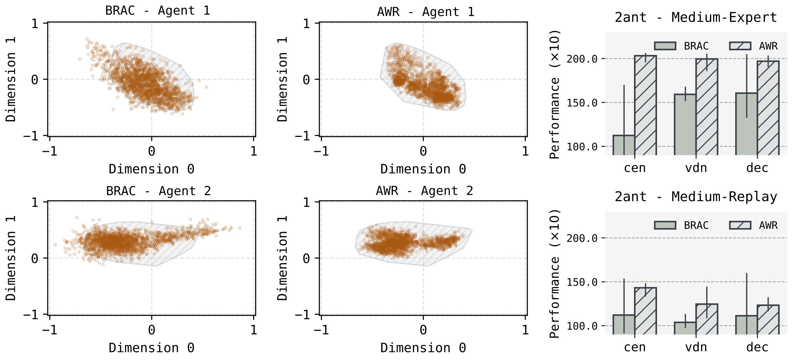
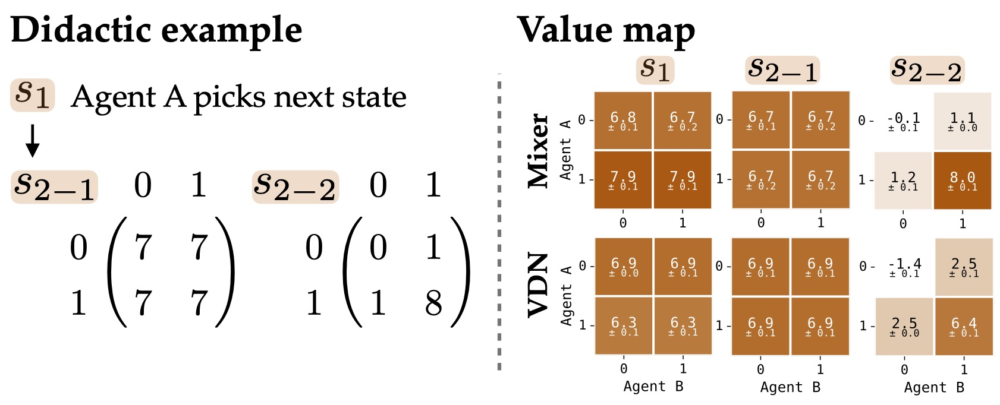
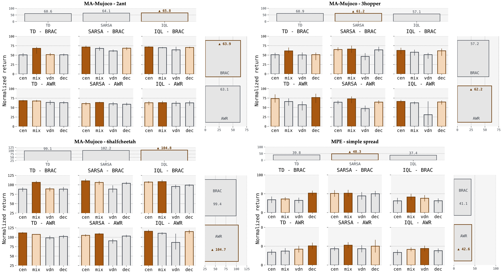

A Lazy, Borrowed Recipe
Offline RL works, but...
Offline RL has achieved many successes in recent years. The basic recipe here, i.e., collect a static dataset, regularize the value function to avoid out-of-distribution actions, extract a conservative policy, and deploy. Consider CQL, IQL, and BRAC — these methods have matured to the point where practitioners can reasonably expect them to work out of the box on standard benchmarks.
When it comes to MARL, a simple conclusion is obvious. Just extend the single-agent recipe.
Take a good offline RL recipe for value learning and policy extraction, bolt on a simple value decomposition scheme like value decomposition network or a centralized critic, and call it a day. Honestly, that is exactly what most of the field has done. If you look at the offline MARL literature from the past few years, there is a remarkably consistent pattern. To be fair, these works do involve meaningful implementation effort, some clever multi-agent-specific ideas, and mathematical extensions. But the backbone is borrowed directly from single-agent offline RL. The multi-agent structure? Handled by the simplest decomposition, either a fully centralized or a linear sum of individual Q-values.
But I want to argue that it has not produced real understanding. We have been lazy, I think. We keep asking "how do we make single-agent offline RL work in multi-agent settings?", but maybe... the more honest question is: "what actually makes offline MARL hard, and are we even looking at the right things?"
A borrowed recipe
Let me be more specific about the pattern. Most offline MARL algorithms follow a three-part formula: i) pick a value learning from offline RL, ii) pick a simple value decomposition method, iii) pick a policy extraction from offline RL. So now, combine them, tune hyperparameters. There is nothing wrong with any individual step. The problem is what gets skipeed.
By defaulting to linear decomposition or centralization, these works sidestep the core structural question of MARL. How should a global value function be composed from individual agents' contributions? Credit assignment is arguably the defining challenge that separates multi-agent from single-agent RL. And yet, most offline MARL papers treat it as an afterthought, something to be handled by the simplest available module.
As y'all already know, VDN is simple but fundamentally limited in its ability to capture complex coordination patterns. Then, a natural objection: doesn't a fully centralized critic already handle this, since it conditions on all agents' states and actions? In principle, yes. But centralization comes with serious practical costs.
More subtly, I suspect centralized critics tend to rely on having observed specific joint patterns in the data, rather than learning composable individual behaviors. Here is my hypothesis. A centralized critic needs coverage of all joint combinations to generalize, but a factored approach learns each agent's value structure individually and composes them through the mixer. We might call this the multi-agent stitching (?) problem. Just as offline RL must stitch together unseen trajectories from fragments in the dataset, offline MARL must stitch together unseen joint behaviors from individually observed agent patterns. Factored decomposition has a structural advantage here that centralization may lack. This is still a hypothesis, but the toy example below gives some intuition.
click cells to toggle training data coverage and compare generalization
Why, then, has the field avoided non-linear value decomposition? Here are three reasons.
- Because it has a well-earned reputation for instability. But instead of diagnosing and fixing that instability, the community has collectively decided to work around it. That is the lazy part.
- Hypernetwork-based mixer has been used when value is considered as the policy itself.
- Part of the reason this simple structure works at all is that most offline benchmarks assume fully cooperative tasks where all agents share the same team reward.
When the single-agent playbook breaks

Sampled action distribution and performance across BRAC and AWR. Convex hull denotes the dataset action support. BRAC's performance degrades as it pushes out of distribution, while AWR's mode-covering behavior allows it to stay within the dataset support.Mode-covering and mode-seeking. Consider the choice between two standard policy extraction methods: BRAC (a mode-seeking approach) and AWR (advantage-weighted regression, a mode-covering approach). In single-agent offline RL, this choice is relatively inconsequential; BRAC is often even slightly preferred. But in MARL, BRAC frequently leads to severe performance degradation. The reason is intuitive. BRAC's mode-seeking behavior pushes individual agents' actions slightly out of distribution. In a single-agent setting, this is fine. A small deviation from the dataset is often beneficial, especially in dataset scaling up scenario. But in a multi-agent setting, even minor individual deviations can compound into joint behaviors that are completely absent from the dataset. The coordination pattern collapses.
This is not a subtle effect. It is a qualitative failure mode that does not exist in single-agent RL.

In \(s_1\), Agent A selects between a safe state \(s_{2-1}\) with a fixed suboptimal reward of \(7\) and a risky state \(s_{2-2}\) with an optimal reward of \(8\). The learned joint Q value matrices for each state.Linear value decomposition is structurally blind to coordination. The linear decomposition that most offline MARL papers rely on; literally cannot represent the non-monotonic payoff structure of the optimal strategy. It is not that VDN performs a little worse. It is structurally incapable of capturing the value landscape that coordination creates. By contrast, the non-linear decomposition identifies the global optimum correctly.
This is the kind of failure that no amount of clever value regularization can fix, because the problem is not in the regularizer. It is in the decomposition.
The instability of non-linear value decomposition
We traced the instability to two coupled problems. First, the mixer's Jacobian structurally couples per-agent approximation errors. Unlike linear decomposition, the non-linear value decomposition amplifies errors through its state-dependent Jacobian. When the operator norm of this exceeds a threshold, the TD operator loses its contraction property. Value updates become expansive rather than contractive, and Q-values could grow exponentially even on expert datasets!
Second, this value-scale amplification propagates to the actor. The policy gradient's magnitude becomes dominated by the absolute scale of Q-values. The actor loss becomes miscalibrated, that is, it is optimizing scale rather than quality. This creates a feedback loop: the critic amplifies values, the actor amplifies gradients, and the whole system spirals.
Sometimes the fix can be simple, normalization. We try to normalize both the critic predictions and TD targets by their batch-level statistics, with a stop-gradient to ensure the Bellman fixed point is preserved. That is it. The optimization objective remains theoretically identical, but the gradient magnitudes are reconditioned.
The point here is not that this normalization is a particularly deep contribution. Maybe... the point is that this problem would be fixable all along. We were not blocked by a fundamental barrier. We were blocked by a lack of diagnosis.
What a proper analysis actually reveals

Each bar plot reports the best normalized return over 8 seeds. The top and right panels marginalize over policy extraction and value learning.With non-linear decomposition stabilized, we ran a comprehensive empirical study: at least \(16,384\) independent runs across four value decomposition methods, three value learning objectives, two policy extraction methods, multiple datasets, hyperparameter sweeps, and eight random seeds per configuration. The goal was simple: which design choices actually matter?
The answer was clear even if we consider fully cooperative tasks. Value decomposition and policy extraction dominate performance. Value learning is secondary. The non-linear method achieved the best or runner-up performance in \(17\) out of \(24\) configurations. AWR consistently outperformed BRAC (mode-seeking) in stability and reliability. Meanwhile, the differences between TD, SARSA, and IQL were modest and never constituted a dominant factor.
Our analysis suggests that the most impactful design axis is how you decompose the global value and how you extract the policy. The very components that most papers treat as fixed infrastructure turn out to be the ones that matter most. In a sense, this is the uncomfortable, opposite lesson of our study against direction of prior works.
Call to actions
So where should the field go from here? I have two concrete suggestions.
First, treat value decomposition as a first-class research problem. The real bottleneck in offline MARL is not value learning itself. It is how we compose a global value function from individual contributions. Non-linear mixing networks are just the beginning. We need to explore alternative architectural designs: dueling mechanisms, attention-based aggregation, factored graph structures, and methods that go beyond the monotonicity constraint.
Second, we need benchmarks and deeper analysis before we need more algorithms. The current standard testbeds, e.g., MA-MuJoCo, SMAC, MPE, share a common limitation: they mostly use team rewards distributed as individual rewards in dense reward settings. This setup creates relatively weak non-linear coupling among agents. It makes the coordination problem look easier than it actually is, and it flatters methods that treat MARL as "single-agent RL with extra dimensions." We need benchmarks that feature genuine coordination complexity: goal-conditioned tasks, skill-based coordination, mixed-motive settings, sparse rewards that require true credit assignment.
More broadly, I think we need a cultural shift toward diagnosis over novelty. The field would benefit more from careful empirical analyses, rather than from yet another algorithmic variant that combines the latest single-agent trick with VDN. Offline MARL's actual problem is coordination under partial observability with offline data. We should be working on that directly, not on increasingly sophisticated ways to avoid it.
Stop borrowing. Start building.
The offline MARL community has, understandably, built on the shoulders of offline single-agent RL. That was a reasonable starting point. But starting points are not destinations. The coordination structure that defines multi-agent systems is not a minor complication to be patched over. And the tools we need to address it are not going to come from single-agent methods, no matter how cleverly we adapt them.
It is time to stop borrowing recipes and start writing our own.
This blog posting is from A Recipe for Stable Offline Multi-agent Reinforcement Learning, supervised by Amy Zhang.